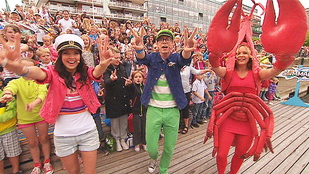
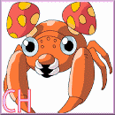
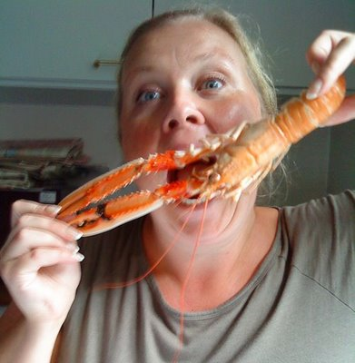

2012
är ett magiskt år. Ett år där vi inte kommer att bryta
traditionen. DET ÄR FANIMIG DAGS FÖR KREPHTOR!
Danzbandet kan arra
sin nollning som de vill, börja på en fredag är ju ett jävla
påhitt men vi kör som vanligt. Augusti innebär sprit och döda röda vattendjur, så upp med burarna och
hjälp oss hata Elm mer än någonsin!
KRÆPHTAFSNINGEN

ALLA SKA LEKA

Thomas
Sörensen
har typ lovat
komma och ställa till med en rejäl midnattsspelning så förbered
er på totalröj när han gör sitt återtåg fem år senare,
Karlskrona har inget TBV men nu
festar vi som om det vore Spygrön all over again!
VAR: typ KREBO eller MINERVA eller nåt?
NÄR: Nån fredag så där lite lagom på
kvällen. Typ i augusti.
Förra året kom Ursula
förbi och sänkte en liter Hallands fläder och knäckte klor.

Traditional Swedish Smoergaasbord will be
arranged some day in the near future. Please read information
at the billboards in building A or follow the music.
No guns allowed, water based animals under
the influence are allowed if their parents are watching.
Ysta the magnificent!
Det glädjer oss att Ysta fortfarande har stringensen att
upptäcka ett återanvänt skämt.
Ett skämt som legat till sig och blivit lite gammalt, så
att säga skämt.
Vi brukar säga att ett gammalt skämt är också ett skämt.
Ysta du får vara vårt lilla skämt, hela kvällen. Driva
runt och lukta illa osv.